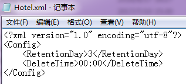
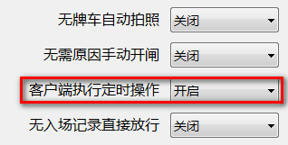
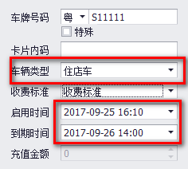
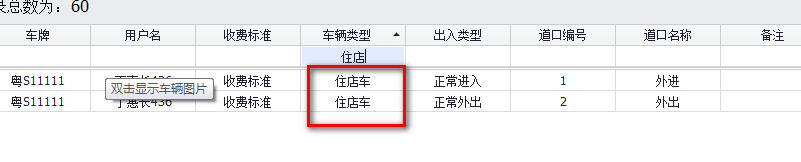
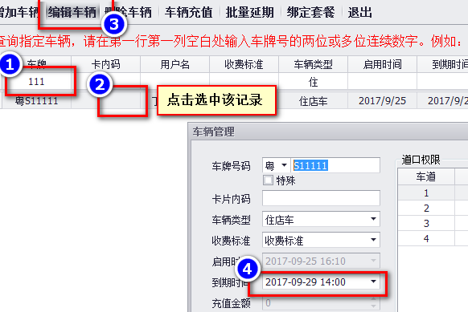

住店车功能
以下参数设置只对当前电脑有效,多台电脑需多次如法炮制. 本功能专为客店停车场应用开发.这类场合客人住店后,一般情况下停车是免费的,一般停车管理软件是将客人的车录到软件里,定义成固定车,然后设定一个住店期限,客人离店后,再将该车从软件里手动删除.
这种操作方式的弊端显而易见:一是住店车和内部车没有类型区分,不利于后期统计分析;二是需要人为将这些住店车从软件里删除,易疏忽易出错且麻烦.
在软件根目录里找到Config文件夹,在此文件夹下有个Hotel.xml1.首先将该文件重命名为Hotel.xml,即去掉原文件名后面的"1",然后用记事本打开该文件,如下图.

RetentionDay:住店车到期后,软件保留该车的天数.超过该天数,软件自动删除该车辆.
DeleteTime:删除车辆的时间点.
上图表示住店车过期后第3天晚上的零点删除过期的住店车.
更改后,保存并重启车牌识别管理软件.
注:本功能不开启,录入车辆时车辆类型下拉框不会出现"住店车".
在软件根目录里找到Config文件夹,在此文件夹下有个Config Setting.exe,打开并将"客户端执行定时操作"功能开启,如下图.

更改后,保存并重启车牌识别管理软件.
像常规的录入用户和车辆一样操作,需要注意的点是在录入车辆时,车辆类型选择"住店车",如下图:

住店车类型启用和到期时间可以限制到分钟,这是其它车辆类型没有的.
上图表示该车在9月25日16:10至9月26日14点之间免费进出停车场,不在时间范围内的停车时间会收取停车费.
结合前面的设置参数,"粤S11111"在9月29日零点后会自动删除.
车辆进出记录表里可以分类查询"住店车",方便管理员统计.

客人续住的,需要管理员手动给该客人的车辆延期.
住店车类型的车辆延期相比月租车延期稍有不同,如下图:

即直接编辑住店车辆,然后修改到期时间即可.